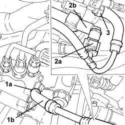

1056F73 FUEL VAPOUR RECOVERY PIPE - R.R.
- Path
- Procedures > 10 ENGINE > 1056 PETROL INJECTION SYSTEM > 1056F PETROL DIRECT INJECTION SYSTEM > 1056F73 FUEL VAPOUR RECOVERY PIPE - R.R.
- Kind
- repair procedure (removal / refitting; the operation number is the code)
- Applies to
- engines: 3.2 JTS; all production periods
- Interactive page
- https://sloeber94.github.io/elrnDB/#/939005274
Applies to: engines: 3.2 JTS; all production periods
 Removing
Removing
 Refitting
Refitting1. Loosen the band (1a) and disconnect the fuel vapour recovery pipe (1b), pressure pump side.
2. Disconnect the rapid connector (2a) for the fuel vapour recovery pipe (2b), three-way connector side.
3. Loosen the band and disconnect the fuel vapour recovery pipe, solenoid valve side.
- Remove the fuel vapour recovery pipe.

Applies to: engines: 3.2 JTS; all production periods
Refitting
Removing- Place the fuel vapour recovery pipe in position.
- Connect the fuel vapour recovery pipe, solenoid valve side and secure it using the band.
- Connect the rapid connector for the fuel vapour recovery pipe, three-way connector side.
- Connect the fuel vapour recovery pipe, pressure pump side and secure it using the band.